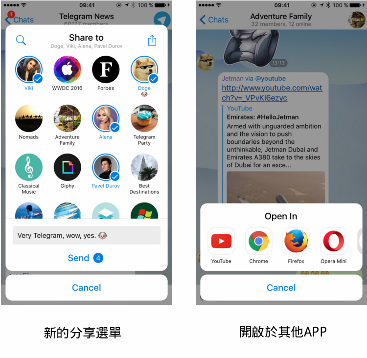
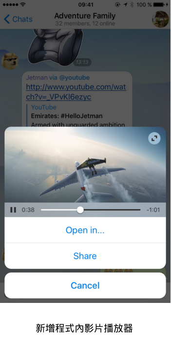
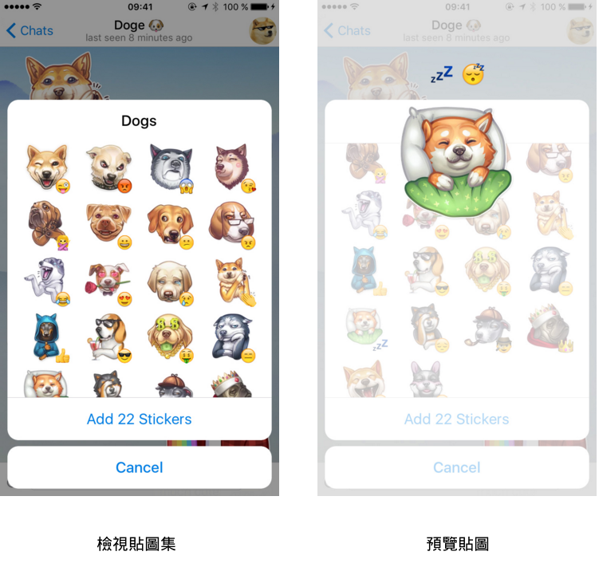
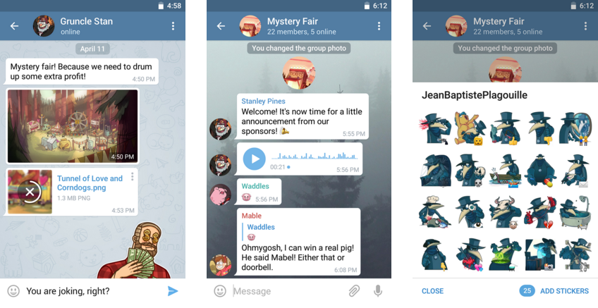

首頁 >
官方新聞 > 分享和預覽（原文）
今天主要的更新是我們的機器人平台，除此之外，我們還為 Telegram 做了幾個設計和介面上的改善。本篇文章主要使用 iOS 的擷取畫面，但在這次的版本中，您可以找出 Android 版也有大量重新設計的部份。
「分享」功能的全新樣貌
從今天開始，我們的iOS用戶可以輕鬆地分享照片和影片到其他電報聊天室，並附帶一則留言，或者將它們傳送給其他應用程式。

新增影片播放器
我們還添加了新而靈巧的程式內媒體播放器，這樣就可以觀看來自 YouTube 等服務的影片。它也將減少您點擊然後開始觀看的次數。

預覽貼圖集和貼圖
添加新的貼圖集變得更加容易。在聊天室中點擊任何貼圖將會立即開啟相關的貼圖集。您可以預覽並直接地從這個選單傳送貼圖。現在，您不用教祖父母如何添加貼圖了！

預覽 GIF 和機器人內容
在 iOS 上，「長按以進行預覽」也可以運作於 GIF 面板中的圖檔 。將預覽圖往上拉可以有進一步的動作。
這同樣適用於來自行內機器人的內容。傳送之前，長按以預覽透過行內機器人建議的結果。現在就來試試 @gif，@sticker 或 @coub。
不要擔心，Android 平台很快也會有這功能！就說到這...
新設計
Android 版應用程式在設計部門中獲得了重要的調整。我們重新設計了聊天室畫面，最佳化了顏色，重新打造按鈕和訊息氣泡，創造了優美的進度條，及全面改版文件及其他附件。

我們還改善了我們 iOS 應用程式的設計，加上生動有趣的進度條和煥然一新的文件。Telegram Desktop 也獲得多個設計改善，並且現在完全支援新型機器人。
2016年4月12日
電報團隊